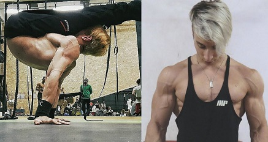
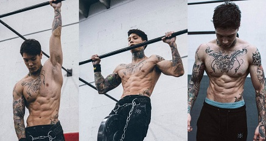
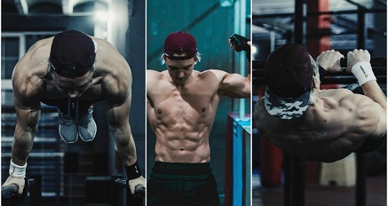
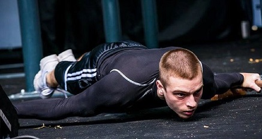

ANDREA LAROSA
Andrea Larosa, campione in carica italiano e quattro volte campione europeo, e' tra i migliori atleti in questa disciplina.
Con il Team Burningate ha vinto innumerevoli premi in competizioni di freestyle, in cui l'atleta si esibisce liberamente
mettendo in mostra le skills piu' difficili, dando il meglio di se. |
 |
|  |
CHRIS HERIA
Chris Heria e' un noto atleta statunitense, famoso anche per il suo canale YouTube "OFFICIALTHENX" avente attualmente piu' di un milione di iscritti.
Ha rappresentato gli Stati Uniti nel Campionato del mondo di Calisthenics(Street Workout) ed e' fondatore e CEO del programma fitness ThenX, una routine di allenamento che coinvolge la ginnastica e i pesi.
|
VIKTOR KAMENOV
Viktor Kamenov e' un atleta diciottenne bulgaro. Noto infatti per la sua giovanissima eta', ha ottenuto il primo posto nel Campionato Nazionale Bulgaro di Street Workout e il terzo
posto alla SWWC 2016 di Mosca. La sua specialita' e' la forza statica, in cui detiene la maggior parte dei suoi record. |
 |
|  |
DANIELS LAIZANS
Daniels Laizans, campione di calisthenics in Lettonia, e' famoso soprattutto per essere stato due volte campione mondiale di Street Workout.Il suo esordio ci fu gia' nel 2014 quando si qualifico'
al World Street Workout Championship a Mosca. |
|